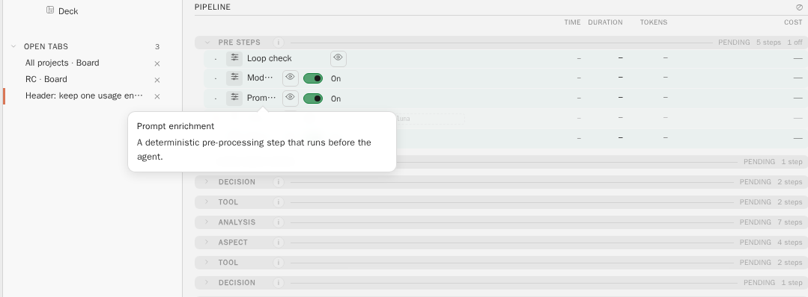
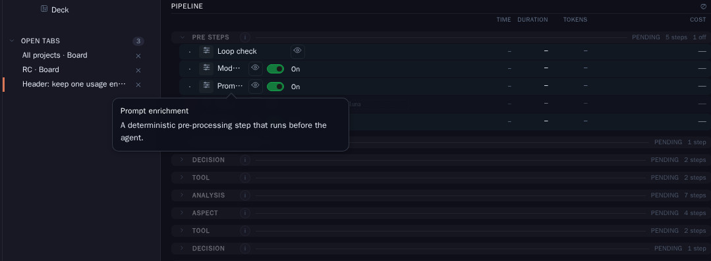
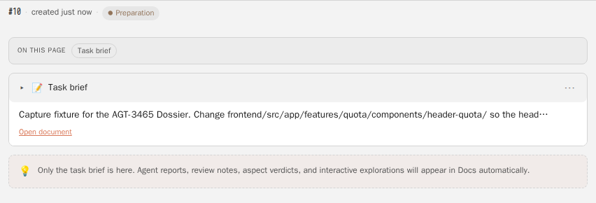
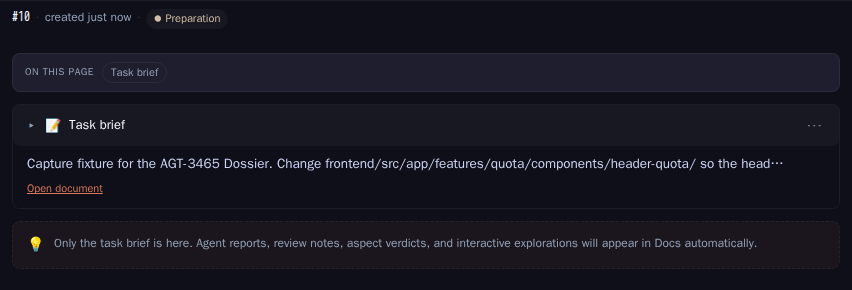

D1-A Extended guide files
Keep one Markdown file per guide and add numbered rules plus path globs to its frontmatter. Smallest change. No CLI can load it natively, and long guides keep mixing binding rules with explanation.
Concept Dossier · AGT-3465
The pipeline should give each card the style rules that apply to it. Today those rules are chosen by substring matching, cut to two optional blocks, and reduced to one summary sentence each. This Dossier measures the current step on 178 cards. It proposes rule packs in skill format, selection from paths and pins, delivery through the prompt, the card's Docs and the CLI skill roots, and a review aspect that checks the diff against exactly the delivered rules. The header rules from AGT-3464 are the pilot.
The measurement window covers the 178 cards with run transcripts on agent-runner-01 (sessions from 21 October to 3 November 2026). The brief asked for the last 200 cards; the runner keeps transcripts for about 13 days, so 178 is the observable set. For 163 of these cards the delivered file list is known from the salvage refs on origin and the edit calls in the transcripts.
| Measured fact | Value |
|---|---|
Cards on which the frontend area fires | 172 of 178 (97%) |
| Of those with a delivered diff, cards that touched frontend files | 55 of 158 (35% precision) |
Enriched frontend cards that received the frontend-styling guide | 1 of 45 |
Cards that received angular-components and touched frontend files | 39 of 120 (33%) |
| Frontend cards that opened none of the four style sources | 19 of 45 |
| Frontend cards outside Agent Studio that received any style rule | 0 of 12 |
| Tokens the enrichment section adds per card (median) | 346 |
| Rule ids cited by review verdicts | none (the verdict format has no rule field) |
Keep one deterministic step, pre-prompt-enrichment, and give it a better input and a better output. The input becomes rule packs in skill format under docs/quality/rules/<pack>/SKILL.md, each with numbered binding rules, path globs and a check per rule. Selection uses pins, inheritance from the source card, paths named in the prompt, and word-boundary keywords. Model tokens stay at zero. Binding rules travel in full inside the prompt. The full pack is in the card's Docs and in the CLI's own skill root for the run. A rule-fit review aspect checks the diff against exactly the delivered rules and cites rule ids. Cited findings feed a rule ledger that proposes sharper or new rules through adding-a-rule.md.
Every row was checked against the code at d63df0be4 (develop, 3 November 2026).
| Part | Where | What it does today |
|---|---|---|
| Selectable style guides | docs/quality/angular-components.md, frontend-styling.md, dotnet-backend.md | Frontmatter with styleGuideId, promptSummary (at most 600 characters) and appliesTo (projects, technologies, taskAreas). Only the summary and the path reach the prompt. The full guides are 467 to 877 tokens. |
| Catalogue snapshot | backend/Features/Docs/ProjectStyleGuideService.cs | Five-minute snapshot over at most 64 top-level Markdown files in docs/quality, 32 KiB per guide. |
| Area detection | IntakeRunner.AreaNeedles | 7 areas, case-insensitive substring match over title, task type, tags and prompt. |
| Built-in rule blocks | IntakeRunner.ConstraintRules | 7 blocks written in C#. One is mandatory (repo-instructions-source). The others are optional with priorities 10 to 70 and apply only to Agent Studio unless a pipeline type pins them. |
| Budget | IntakeRunner.ApplyEnrichmentBudget | Mandatory blocks plus at most 2 optional blocks, 6,000 characters (about 1,500 tokens). Every guide has priority 20, so ties break by id: angular-components before dotnet-backend before frontend-styling. |
| Explicit pins | PipelineStepConfig.EnrichmentBlockIds | A pipeline type can pin built-in block ids. There is no card-level pin. |
| Enrichment step | PromptEnrichmentService, step pre-prompt-enrichment | Writes intake/enriched-context.md and enrichment-report.json into the task folder, appends the context to the launch prompt, and records the step with zero selector tokens. |
| Remote transport | RunSpecDto.ModeFraming | The enrichment reaches a remote runner only as text inside the mode framing. The task folder is not transported; on agent-runner-01 the task folder holds only results/. |
| Skills | .agents/skills/ (task-api, regenerate-readme, runtime-log-analysis), docs/concepts/skills-architecture.md | Workflow skills. No code materializes or selects skills for a run. The concept page proposes a central library with native CLI exports as adapters. |
| Hard rules | AGENTS.md, frontend/AGENTS.md (about 9,000 tokens), docs/quality/design/style-guide-hard-rules.md (R1 to R9, about 2,200 tokens), agent-rules/core.md | Always-present instructions. Codex auto-loads only the root AGENTS.md for a run at the repository root. Claude Code loads CLAUDE.md, which points to AGENTS.md. No frontend/CLAUDE.md exists. |
| Mechanical guards | npm run lint:structure, stylelint spacing rule, FeatureFolderBoundaryTests | Lane strings (R9), disclosure markers, segmented controls, spacing tokens for opted-in files, backend feature folders. |
| Task view | Overview pipeline block, Docs tab (prompt-pane, tab id description), enrichment report in the Task tab | The Overview pipeline line shows Loop check, Model qualification, Prompt enrichment as the first pre-steps; the Docs tab lists task-folder documents (screenshots). The Task tab renders enrichment-report.json beside the authored prompt (code reference). |
| Remote Review | docs/system/domains/review.md | Four stock aspects (requirement-fit, code-quality, documentation-impact, tests-and-evidence) plus concept-fit for concept cards. They share a cached prompt prefix. A verdict cites evidence_checked and missing but has no rule id field. |
| Source audits | QS-107 and TE-58 result folders on agent-runner-01 | Both show that a project without AGENTS.md or docs/quality gets zero blocks. TE-58 also shows the token needle detecting frontend because the project is called Token Economy. VL-2 has no result folder on this host. |
Each gap is backed by a measurement in Evidence (E-numbers) or a code reference.
On the authored prompt alone, without title and tags, frontend fires on 97% of cards, git on 83%, runner on 80% and backend on 71%. The needle ui fires on 142 of 178 prompts because it is a substring of words such as "build", "guide" and "require". card fires on 134. For cards with a known diff, the frontend area has 35% precision. Word boundaries alone do not fix this: precision stays at 36%, because "card", "lane", "token" and "state" are real words in nearly every Agent Studio prompt (E2, E3).
All three guides have priority 20, and the two optional slots are filled in id order. When backend also fires (71% of cards), angular-components and dotnet-backend take both slots and frontend-styling is dropped. It reached 1 of 45 enriched frontend cards. The built-in frontend-design-tokens-components block (priority 30) only appears on concept cards, where guides are not offered. The quality README promises that styling cards receive the frontend-styling context; the data shows they almost never do (E4).
RenderLaunchContext lists only the appended blocks. intake/enriched-context.md is written from the same text. A dropped guide appears only as a rejected-budget candidate inside enrichment-report.json (code, E9).
Of 39 frontend cards whose prompt cited a style guide, 18 opened that guide. 19 of 45 enriched frontend cards opened none of the four style sources (angular-components, frontend-styling, hard rules, living rules). Claude runs opened angular-components.md on 1 of 10 frontend cards; Codex runs on 14 of 35 (E6).
33 cards in PROJ-015, 016, 020, 021 and 022 ran without enrichment; 10 cards in PROJ-011, 012 and 023 received only the repository-instructions block. 12 frontend-touching cards outside Agent Studio received no style rule. None of those repositories on agent-runner-01 has docs/quality or a skills folder (E7, QS-107, TE-58).
The guides use prose and tables. The hard rules have ids (R1 to R9), but the verdict sentinel has no field for them. A header regression found in review becomes a fix card (AGT-3458, "Header destinations can appear twice when the shell narrows inside a wide viewport") and leaves no trace on any rule (E13, E14).
Documents in the card's Docs are visible to people, but a remote run receives only the prompt text. The full rule text can reach a remote agent only through the prompt or through the repository checkout (E12).
Between 7 and 11 cards a week touch header-zone files (week 43: 11; week 45: 7 cards on Monday and Tuesday alone). Every one of them received the generic Angular summary. None received a header-specific rule, because none exists yet; AGT-3464 writes it (E13).
One loop from source to review and back. Selection and delivery stay deterministic and free of model tokens. Review is the only model step, and it already exists.
A rule pack is a folder in the open skill format: SKILL.md with name and description in the frontmatter, so that Claude Code and Codex can load it as a native skill. Agent Studio data goes into the standard metadata map as strings, so the file stays valid for both CLIs. The body starts with the binding rules: one line each, numbered with a stable id, followed by its check. Explanations, examples and screenshots go into references/.
docs/quality/rules/header-zone/
SKILL.md
references/slot-registry.md
references/examples.md
---
name: header-zone
description: Binding rules for the Studio app header and the task header zone. Use when changing the usage cockpit header, header quota, studio-shell header wiring, or the task detail header.
metadata:
pack-version: "1"
tier: binding
applies-to: '{"projects":["PROJ-002"],"technologies":["angular"],"surfaces":["app-header","task-header"],"paths":["frontend/src/app/features/usage-cockpit/components/usage-cockpit-header/**","frontend/src/app/features/studio-shell/studio-shell.header-cockpit.ts","frontend/src/app/features/quota/components/header-quota/**","frontend/src/app/features/task-detail/components/detail-header/**"],"taskKinds":["coding","review-fix"]}'
keywords: "app header, task header, header zone, usage cockpit"
---
# Header zone
## Binding rules
- HDR-1 <rule text from AGT-3464>. Check: test HeaderSlotRegistry (AGT-3464).
- HDR-2 Every header destination renders exactly once at every shell width. Check: review.
- HDR-3 Usage and session statistics live in the footer only; the header holds account and settings. Check: review.
## Evidence
- AGT-3458 review finding (2026-11-03), AGT-3356 operator wording (2026-11-01).
## References
- references/slot-registry.md, references/examples.mdHDR-2 and HDR-3 are candidates taken from the AGT-3458 review finding and the AGT-3356 operator wording. AGT-3464 owns the final rule text and numbering.
The step order in the task view does not change. The Prompt enrichment step gains rule selection, and one aspect is added after the run.
One block per question from the brief. The recommended option of each is marked and justified in Recommendation.
Keep one Markdown file per guide and add numbered rules plus path globs to its frontmatter. Smallest change. No CLI can load it natively, and long guides keep mixing binding rules with explanation.
A folder with SKILL.md (name, description, metadata with applies-to, tier, version, keywords), binding rules with ids and checks, and references/. Claude Code and Codex can read the same file as a skill. The catalogue parser reuses the inline-JSON appliesTo contract.
Rules stored in the Task Server and edited in the UI. Good for workspace-wide rules, but it moves project knowledge out of the repository, outside review and the Wiki.
Migration under D1-B. angular-components, frontend-styling and dotnet-backend become packs with ids (ANG-n, FES-n, NET-n); each current promptSummary clause becomes one binding rule. The C# block frontend-design-tokens-components merges into angular-components; it repeats that guide's token rule. git-handling-api-not-cli, task-state-api-first, orchestrator-state-machine-authority, stable-namespaces-on-splits and delegation-economy become the Agent Studio pack studio-architecture. The hard rules R1 to R9 become the pack studio-ui-hard-rules and keep their ids. repo-instructions-source stays a mandatory platform block in C#; it is a pointer, not a style rule.
Location. Project packs: docs/quality/rules/<pack>/ in the project repository, so they are present in every worktree, shown in the Wiki, and covered by adding-a-rule.md. Workspace packs: a rule-packs/ folder shipped with Agent Studio and enabled for every project, with a per-project switch in project settings. Packs under .agents/skills/ were considered. Codex lists every skill there in every run regardless of selection, and Claude Code does not read that folder.
Word boundaries and fewer needles. The backtest shows 36% precision with word boundaries, because the remaining words occur in nearly every prompt.
In order of strength: pins (card field rulePacks, orchestrator, pipeline type); inheritance (a review-fix or continuation card takes the source card's delivered packs plus packs matched by the source card's diff); paths and component selectors in the prompt and in referenced Dossiers and cards, matched against pack globs; earlier-attempt diff; keywords per pack with word boundaries and at least two hits; card mode as a gate. Zero model tokens.
A Claude Haiku 5.5 call reads the prompt and a pack index (about 4,000 input and 100 output tokens) and returns pack ids. At $0.10 input and $0.50 output per million tokens that is about $0.00045 per card, or $0.45 per 1,000 cards. It is non-deterministic, needs a fallback when the provider is unavailable, and adds latency before dispatch.
A review-time safety net applies to every option. The rule-fit aspect selects packs from the actual diff, which is exact. A pack matched by the diff but not delivered is reviewed anyway and recorded as a selection miss.
The current limit. It is what drops frontend-styling.
Tier 0: mandatory platform blocks (about 100 tokens). Tier 1: binding rules of selected packs in full, at most 12 rules and 1,200 characters per pack, 4,000 characters in total. Tier 2: guidance packs as one-line pointers, at most 6. The 6,000-character ceiling stays. Order is by signal strength, then by the narrowest glob, never by id. Overflow drops pointers before binding rules. The prompt, the Docs document and the report name every omitted pack.
Every selected pack in full. The header pack plus the Angular pack plus the hard rules alone would exceed 3,500 tokens. This repeats text the agent can open on demand.
A rules/selected-rules.md document in the task folder, shown in the Docs tab, plus the prompt. Visible and auditable. A remote run sees the document only if it is transported, and today the task folder is not.
Copy selected packs into .claude/skills/ and .agents/skills/ of the run's worktree. Codex 0.155.0 lists <worktree>/.agents/skills in headless runs. The copies are untracked files that a platform salvage commit can capture, and .agents/skills is a tracked folder in Agent Studio.
Binding rules inline in the prompt (works for every CLI). rules/selected-rules.md plus the report in the task folder (Docs tab, audit, review input), and an additive RuleDelivery field in RunSpecDto carrying the document and pack files (bounded to 64 KiB). The runner materializes the selected packs into the per-card clean-context skill root ($CODEX_HOME/skills/, $CLAUDE_CONFIG_DIR/skills/), which is outside the worktree and owned by the runner.
pre-prompt-enrichment (recommended)One selector, one budget, one report, one commit marker. The step already blocks dispatch when its report cannot be persisted and already records zero selector tokens.
pre-rule-selectionIts own row between Model qualification and Prompt enrichment. More visible, but it creates two budgets competing for the same prompt space and two reports a reviewer must join.
code-qualityNo new call. Rule verdicts get mixed with general findings, and the step cannot be routed or disabled on its own.
rule-fit aspect plus guards (recommended)Runs only when delivered or diff-matched packs contain rules checked by review. Input: exactly those rules from enrichment-report.json, the merge-base diff, and the packs matched by the diff. The sentinel gains rules_cited=HDR-2,ANG-3; a block must cite a rule id and a diff location. Rules whose check is a deterministic guard are not judged by the model; a failed guard is cited instead. The aspect shares the frozen cached prefix of the stock aspects.
Cheapest, but most header rules (one render per width, footer-only usage) are layout facts that a lint rule cannot see.
Authors read review reports and edit guides. This is today's state; AGT-3458 left no trace on a rule.
Each rule-cited finding is a ledger entry (rule id, card, verdict, delivered or not). Triggers: the same delivered rule cited on two cards within 14 days proposes a sharpen-rule card; a cited rule that was not delivered proposes a surface-map fix; two uncited findings within a pack's paths in 14 days propose a new-rule card; a rule cited three times with a mechanical shape proposes a guard. Cards land in the backlog with the evidence and follow adding-a-rule.md.
Rule-cited findings per card, header-zone regressions per week, tokens added per card.
Adds selection precision (delivered pack paths touched by the diff), selection misses (diff-matched packs not delivered), and the open rate of pointer-only packs. These numbers show whether a rule failed or simply never arrived.
D1-B rule packs in skill format under docs/quality/rules/, with workspace packs shipped with Agent Studio. D2-B deterministic multi-signal selection with the review-time safety net. D3-B tiered budget with visible overflow. D4-C delivery through prompt, card Docs and the clean-context skill root. D5-A inside pre-prompt-enrichment. D6-B a rule-fit aspect plus deterministic guards. D7-B a rule ledger that proposes cards. D8-B metrics including selection quality. The pilot is the header-zone pack from AGT-3464.
| Decision | Choice | Main reason |
|---|---|---|
| D1 Rule unit | D1-B | One file serves the Wiki, the selector, the reviewer and both installed CLIs. Rule ids make review citations and the ledger possible (G6). |
| D2 Selection | D2-B | Path and pin signals reach 65 to 73% precision against 35% today (E10). The lower recall is covered by the pointer index, Codex's native skill listing, and the exact diff-based selection in review. A model step is not needed until the selection-miss rate shows otherwise. |
| D3 Budget | D3-B | It removes the id tie-break that drops frontend-styling (G2). It keeps the existing 6,000-character ceiling and makes every drop visible (G3). |
| D4 Delivery | D4-C | Rules in the prompt work for every CLI and every host. The Docs document gives people the same view as the agent. The skill root gives on-demand references without writing into the worktree (G4, G7). |
| D5 Phase | D5-A | One budget and one report. The pipeline line keeps its order (figure above). |
| D6 Verification | D6-B | The diff is judged against exactly what the agent was told, with rule ids. Mechanical rules stay with guards. |
| D7 Feedback | D7-B | Repeated header findings such as AGT-3458 become rule changes with evidence instead of only fix cards. |
| D8 Measurement | D8-B | Separates "rule unclear" from "rule never delivered". |
A typical frontend card with the header pack: platform block about 90 tokens, header binding rules about 250, Angular binding rules about 250, hard-rule binding lines about 300, three pointers about 60. That is about 950 tokens against 346 today, within the existing 1,500-token ceiling. On Claude Opus 5.5 the added 600 tokens cost $0.0024 once and are then read from the prompt cache at $0.20 per million tokens on every turn. The rule-fit aspect reads the shared cached prefix and adds one bounded call per card that has review-checked rules.
Method. A script read every Claude Code 2.1.305 and Codex 0.155.0 session transcript under the runner's clean-context state on agent-runner-01 whose working directory is a task worktree (524 sessions, 178 cards). For each card it took the authored prompt, cut at the first platform section (Prompt enrichment, Delivery and approval, Concept mode, Verification scope, session notes, run context). Area detection was replayed with the exact needle table from IntakeRunner. Title, task type and tags are not in the transcript, so real firing rates can only be higher. Appended block ids were read from the launch prompt. Ground truth for surfaces is the delivered file list: the diff of the latest salvage ref per card against its merge base with origin/develop (130 cards), joined with edit calls from the transcripts. Guide opens are tool calls that name the file (Read, sed, cat, rg). Scripts and aggregate numbers are in evidence/; no prompt text is stored there.
ui 142, card 134, agent 101, commit 91, api 64, token 54.
ObservedE3 Area correctnessfrontend area against delivered frontend files: 55 true, 103 false positives, 0 misses (35% precision). backend: 99 true, 22 false, 29 misses (82% precision, 77% recall).
ObservedE4 Appended blocksrepo-instructions 145, angular-components 126, dotnet-backend 121, frontend-design-tokens 8, git-handling 8, delegation-economy 6, frontend-styling 1. 135 cards carried exactly three blocks. frontend-styling reached 1 of 45 enriched frontend cards (AGT-3458, whose prompt did not fire backend).
ObservedE5 Guide precisionangular-components was appended to 120 cards with a delivered diff; 39 touched frontend files. dotnet-backend: 115 appended, 102 touched backend files.
ObservedE6 Guide opens45 enriched frontend cards: angular-components.md opened on 15, frontend-styling.md on 0, hard rules on 23, frontend/AGENTS.md on 39; 19 opened none of the four style sources. Claude 10 cards (1, 2, 6). Codex 35 cards (14, 21, 33). Of 39 cards citing a guide in the prompt, 18 opened it.
ObservedE7 Other projects33 unenriched cards (PROJ-015, 016, 020, 021, 022), 10 cards with only the repository-instructions block (PROJ-011, 012, 023), 12 frontend-touching cards without any style rule. QS-107 and TE-58 audits reach the same result from source.
ObservedE8 Token costEnrichment section median 346 tokens, maximum 386 (characters / 4). Per block: repo-instructions 90, angular-components 104, dotnet-backend 124, frontend-styling 164. Full sources: angular-components 842, frontend-styling 467, hard rules 2,212, frontend/AGENTS.md about 9,064.
ObservedE9 Drop visibilityPromptEnrichmentService.RenderLaunchContext renders only manifest.Constraints; Prepare writes that same text to intake/enriched-context.md. Omissions appear only as rejected-budget candidates in enrichment-report.json.
InferredE10 Selector backtestFrontend surface on 163 cards. Current needles 35% precision, 100% recall. Paths in prompt only: 73%, 44%. Two strong words with boundaries: 70%, 55%. Path or two strong words: 65%, 58%. 108 of 163 prompts name a repository path; 13 are review-fix cards whose source card diff is known. Pack-level globs are narrower than the frontend surface, so this is a lower bound for the precision of a pack such as header-zone.
ObservedE11 Native skill discoveryCodex 0.155.0 headless (codex_exec) on PROJ-002 worktrees lists skill roots $CODEX_HOME/skills/.system, plugin caches and <worktree>/.agents/skills, and names task-api, regenerate-readme and runtime-log-analysis with descriptions only. Claude Code 2.1.305: in 162 sessions on task worktrees the skill listing holds only the 12 to 14 built-in skills, never a skill from .agents/skills. A live probe of .claude/skills discovery failed to authenticate (no billable call was made), so that path is unverified on this host. Copilot and Gemini CLIs are not installed on agent-runner-01.
ObservedE12 Remote transportRunSpecDto carries ModeFraming, model, budget and follow-up fields only. The runner task folder for this card contains only results/. The CLI config directories are per card (taskIdentityHash in .agent-studio-clean-context.json) and Codex directories already contain a skills/ folder.
ObservedE13 Header-zone churnDistinct cards per ISO week whose salvage commits touch header-zone files (usage-cockpit-header, studio-shell header cockpit and shell template and styles, header-quota, task detail-header): W35 2, W36 1, W37 9, W38 2, W39 3, W40 5, W41 4, W42 7, W43 11, W44 3, W45 7 (Monday and Tuesday only). The shell template and styles also hold non-header parts, so this is an upper bound for header changes. AGT-3458 is a review-fix card for a header defect found in AGT-3356.
ObservedE14 Verdict format[[ASPECT_VERDICT: status; summary; evidence_checked; missing]] per review.md. No rule field; the citation policy downgrades an uncited block to concerns.
ProposedE15 Classifier costClaude Haiku 5.5 at $0.10 and $0.50 per million input and output tokens: 4,000 in and 100 out cost about $0.00045 per card. Claude Sonnet 5.5 at $2 and $10: about $0.009 per card.
Both captures come from the real backend of the isolated worktree test stack (scripts/worktree-test-stack.sh up --with-frontend) at d63df0be4. A temporary git repository was registered as project "Rule Capture", and one card, RC-1, was created through the public API; the capture spec only reads what the backend returns for it. The pinned ADR-0056 demo stack could not be used: since AGT-2669 its public-demo-readonly profile answers every API call over plain HTTP with 426 https-required, so generate.sh fails at its pinning step. Source: capture/rule-delivery-capture.spec.ts, capture/run-capture.sh, DOM facts in capture/rule-delivery-facts.json.

Third pre-step: Prompt enrichment
pre-loop-guard, pre-model-qualification, pre-prompt-enrichment).
Light: captured on agent-runner-01 from the isolated worktree test stack at d63df0be4, card RC-1 created through the API (--real).
Dark: captured , same stack, card and commit (--real).

Task folder document: prompt.md
description) lists the documents of the card's task folder. For a new card it shows one card, "Task brief" (prompt.md), and the hint "Only the task brief is here. Agent reports, review notes, aspect verdicts, and interactive explorations will appear in Docs automatically." A rules/selected-rules.md written by the enrichment step would appear in this list.
Light: captured on agent-runner-01 from the isolated worktree test stack at d63df0be4, card RC-1 (--real); cropped to the top 290 px of the pane, the rest is empty.
Dark: captured , same stack, card and commit (--real); cropped the same way.
The enrichment report beside the authored prompt in the Task tab is stated from code only (task-inspector-tab.component.html, data-testid="enrichment-report"). It needs a dispatched run, and no CLI run was started for this Dossier. Its mocked spec e2e/task-detail/prompt-enrichment-report.spec.ts fails at d63df0be4 because its catch-all route answers /api/usage/cockpit with [], which raises "clis is not iterable" in UsageCockpitHeaderComponent; it produced no image.
Each decision has a working recommendation. Implementation cards use it unless an operator decision selects another option.
| Id | Decision | Options | Recommended |
|---|---|---|---|
| D1 | Rule unit and location | A extended guide files · B skill-format packs in docs/quality/rules/ plus workspace packs · C rules as application data | B |
| D2 | Selection signals | A tuned needles · B deterministic pins, inheritance, paths, keywords, mode · C Haiku classifier | B, with C kept as a later option if the measured selection-miss rate stays above 15% after four weeks |
| D3 | Budget | A two optional blocks · B tiered character budget, visible overflow · C full packs | B |
| D4 | Delivery | A card Docs only · B native skills in the worktree · C prompt plus card Docs plus clean-context skill root | C |
| D5 | Phase | A extend pre-prompt-enrichment · B new pre-rule-selection step | A |
| D6 | Verification | A inside code-quality · B dedicated rule-fit aspect plus guards · C guards only | B |
| D7 | Feedback loop | A manual · B rule ledger proposing cards | B |
| D8 | Measurement | A brief metrics · B brief metrics plus selection quality | B |
| D9 | Concept-mode cards | A no rules · B pointer index only · C same as coding | B; binding rules only for packs pinned on the card |
| D10 | Workspace pack override | A project may disable a workspace pack · B project may also replace it under the same id | A; same-id packs are rejected by the catalogue |
| Metric | Baseline (this Dossier) | Target after the pilot |
|---|---|---|
| Rule-cited findings per card | not measurable (no rule ids) | measured on every card with review-checked rules |
| Header-zone regressions per week | header-zone cards 3 to 11 per week; regressions counted from S8 on as review-fix or bug cards whose diff touches header-zone paths | falling four-week trend; zero repeats of a cited HDR rule within 14 days |
| Tokens added per card | median 346 | at most 1,500 (unchanged ceiling) |
| Selection precision | angular-components 33% | at least 70% per pack |
| Selection misses | not measurable | below 15% of cards with a diff-matched pack |
Each slice is one card. The order is the pilot path: S1 to S5 put the header pack in front of agents and reviewers; S6 to S9 migrate the rest and close the loop. The same slices are in workbench.json as implementationTasks.
| Slice | Content | Depends on | Acceptance |
|---|---|---|---|
| S1 Rule-pack format and catalogue | Parser and validation for docs/quality/rules/*/SKILL.md and workspace packs; rule ids, tiers, globs, checks; catalogue API; docs. | none | Fixture packs parse; duplicate ids, oversize packs and invalid globs are rejected with path warnings; existing guides still load; docs updated. |
| S2 Header-zone pilot pack | Author header-zone from AGT-3464 with ids, checks and references; wire the slot-registry guard as the check of its rule. | S1, AGT-3464 | Pack validates in the catalogue; every rule has a check; the slot-registry rule points at a passing test; Wiki shows the pack. |
| S3 Selector v5 and tiered budget | Pins, inheritance, paths and selectors, keywords, mode gate; tiered budget; overflow in prompt, Docs and report; rulePacks section in the report. | S1 | Replay tests: a header card naming header-quota gets header-zone; a review-fix card inherits it; a backend-only card does not get Angular packs; frontend-styling is no longer dropped by id order; zero selector tokens. |
| S4 Delivery to the run | rules/selected-rules.md in the task folder; additive RuleDelivery in RunSpecDto; runner materializes packs into the clean-context skill root. | S3 | Docs tab lists the document; a remote run receives it; a live probe on the installed Claude Code and Codex versions shows the pack in the skill listing; no file appears in git status of the worktree. |
| S5 Rule-fit review aspect | New aspect, scheduling condition, frozen prompt with delivered and diff-matched rules, rules_cited in the sentinel, selection-miss record. | S3 | A seeded header violation yields a block citing HDR-n and a diff location; an uncited block is downgraded; a guard-checked rule is not judged by the model; cache read on the shared prefix is reported. |
| S6 Migrate guides and built-in blocks | Three guides to packs; C# blocks to studio-architecture; hard rules to studio-ui-hard-rules; remove AreaNeedles from pack selection. | S1, S3 | Only repo-instructions-source remains in C#; every former block id maps to a pack rule; README and adding-a-rule.md describe packs. |
| S7 Rule ledger and proposed cards | Ledger of cited findings; four triggers; backlog card proposals with evidence. | S5 | Two seeded citations of one delivered rule within 14 days propose one sharpen-rule card; a cited undelivered rule proposes a surface-map card; no duplicates. |
| S8 Measurement | Weekly metrics per project and pack: cited findings, header-zone regressions, tokens added, precision, misses, pointer open rate. | S3, S5 | Numbers reproduce this Dossier's baselines on the replay set; header-zone regressions per week are visible. |
| S9 Workspace packs for every project | Shipped workspace packs with a per-project switch; projects without docs/quality receive them. | S1, S3 | A fixture project with no catalogue receives the workspace pack; disabling it per project removes it; TE-58 replay shows a non-empty enrichment. |
The concept-mode delivery rule allowed changes only inside this Dossier directory. The required row in docs/start/README.md is left to slice S1, which touches that index anyway.
Delivery slices append their current implementation status here. Decision content above remains unchanged.